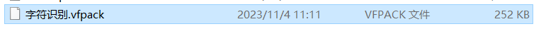
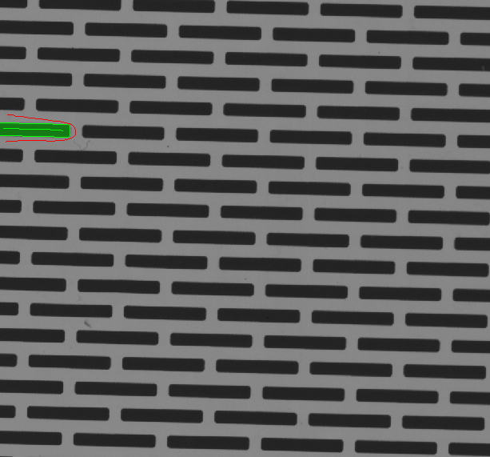

軟體介紹
功能佈局
術語概念
● 數據集：
○ 訓練集：參與訓練的數據集
○ 測試集：參與模型自動評價的數據集
○ 未標註：可用於人工模型評估
● 視圖：
○ 視圖：基於原始影像的矩形框（ROI），框內圖像稱為視圖
○ 視圖變換：視圖框的變換設定
○ 視圖掩模：繪製干擾區域，干擾區域將被置黑，不參與訓練
○ 視圖過濾：通過過濾設定，保留需要的視圖
● OK圖與NG圖：
○ OK圖：良品圖
○ NG圖：缺陷圖
● 指標：
○ 漏檢率 = 未檢出NG數量 / NG總數
○ 過檢率 = OK判為NG數量 / OK總數
○ 精確率 = 檢測為NG的NG數量 / 檢測為NG數量
○ 召回率 = 檢測為NG的NG數量 / NG總數
○ 準確率 = 正確分類數量 / 總數
○ 混淆矩陣：混淆矩陣是一種常用的模型評估工具，縱向是人工標註、橫向是推理結果。混淆矩陣可以直觀地瞭解模型在哪一類樣本裡面表現不佳，與其他哪些類別容易混淆。
● Tag： ○ 圖像Tag：用於標識圖像，可以標識圖像的屬性（批次、採集時間、何種缺陷等）； ○ 視圖Tag：視圖的標記，可以標識視圖的特徵
● 基礎操作： ○ 標註：在圖片中繪製缺陷區域。 ○ 標籤：缺陷的類別。 ○ 不學習區域/掩膜：不希望模型關注的區域。 ○ 重點學習區域：希望模型重點關注的區域。
專案管理
（1）入口

（2）創建工作區 用戶可以選擇加載本地目錄或者選擇在已有工作區下新建子工作區
（3）創建專案
選擇所需專案類型，並輸入專案名稱

（4）工作區支援的操作
1.工作區重命名 2.工作區另存為 3.新建專案 4.專案清單 5.打開全部專案 6.查看工作區資訊 7.刪除工作區
（5）專案支援的操作
1.縮略圖 2.專案重命名 3.專案資訊 4.備註資訊編輯 5.刪除專案 6.打開專案
專案管理示範使用方法
圖像操作
導入圖像
（1）以圖像為單位導入

（2）以資料夾為單位導入

數據匯出
如果是匯出演算法模組的圖像，匯出的步驟如下：
首先在圖像列表中選擇對應圖像
點擊當前模組圖像IO區中的匯出按鈕或者圖像清單右鍵選擇“匯出選中圖像/標註”

選擇匯出原圖/標註，也可以選擇匯出渲染圖

如果選擇匯出原圖/標註，可以在原圖和標註中進行複選（可以自由選擇只匯出標註/原圖或者全部匯出）
選擇想要的匯出路徑，點擊確定即可完成數據匯出
在指定路徑下可以看到本次存儲的數據包檔案
數據導入

點擊主介面右上角導入圖像
選擇3.0匯出的數據包檔案

進入數據包面板

可以根據圖像Tag進行進一步的數據篩選，Tag篩選之間的連接條件為且，最多添加3個

可以複選原圖和標註，可以複選圖像
點擊確定即可 另外，如果當前模組已經有圖像，導入資料包是可以只選擇與已有圖像對應的標註，可以實現自動對應
不同模組之間標註互相支援：
分割和檢測的標註互相支援
分割和非監督分割的標註互相支援
OCR和檢測的標註互相支援
檢測和定位（裝配檢查）的標註互相支援
相容舊版本標註
相容說明
2.3、2.4版本的標註可以導入3.2中使用（相容aqlabel檔）
操作步驟
2.X首模組標註導入3.0 (1) 要準備的數據：2.X首模組source資料夾和label資料夾，且這兩個資料夾需要放在相同目錄下 (2) 3.0中新建專案 (3) 在輸入節點後面增加對應的首模組 (4) 在首模組中點擊添加圖像，選擇source裡的圖像，點擊添加 (5) 進入當前模組的視圖轉換器中，點擊應用。即可看到保留的標註
協力廠商標註導入
分割模組： ● 支援Labelme：json格式標註文件 檢測模組： ● 支援Labelme：json格式標註文件 ● 支援Labelimage：xml、json格式標註文件
圖像列表功能
（1）右鍵功能：
添加工具
（1）點擊添加按鈕
（2）進入添加模組介面
1.點擊可以添加對應的模組 2.按一下模組，可以查看介紹資訊 （3）並聯模組 在模組後面繼續添加其他工具，即可完成模組並聯

（4）串聯模組 在模組後面繼續添加模組，即可完成模組串聯


數據標註
畫筆工具
多邊形繪製工具：
多邊形繪製工具分別為：圓形筆、方形筆、圓線形筆、方線形筆、鋼筆、鉛筆、兩點畫圓工具、魔術棒工具、快速標註工具。 （1）圓形筆和方形筆：圓形畫筆工具，直徑為畫筆大小。方形畫筆工具，邊長為畫筆大小。鍵盤A鍵畫筆增大，D鍵畫筆縮小。
（2）圓線形筆和方形線筆：圓線形筆工具，滑鼠左鍵設定起點後，可以連續左鍵點擊畫出多段直線標註，按兩下滑鼠左鍵結束標註。直徑為畫筆大小。方形線筆筆形為方形，滑鼠左鍵設定起點後，可以連續左鍵點擊畫出多段直線標註，按兩下滑鼠左鍵結束標註。線寬為畫筆大小。
（3）鋼筆填充滑鼠左鍵設定起點後，連續左鍵點擊畫出多段線段輪廓，按兩下滑鼠左鍵封閉輪廓，輪廓圍成的區域自動填充為標註，不受畫筆大小影響，使用時應避免輪廓線段交叉。 鉛筆填充長按滑鼠左鍵，繪製標註輪廓，鬆開滑鼠左鍵自動填充為標註，不受畫筆大小影響，使用時應避免輪廓線段交叉。

（4）兩點畫圓：滑鼠左鍵設定起點後，拖動滑鼠繪製圓形，按兩下滑鼠左鍵封閉輪廓，輪廓圍成的區域自動填充為標註，不受畫筆大小影響。
（5）魔術棒：對於一些分界線比較明顯的圖像，通過魔術棒工具可以很快速的將圖像摳出，魔術棒的作用是可以知道你點擊的位置的顏色，並自動獲取附近區域相同的顏色，使它們處於選擇狀態。不受畫筆大小影響。並且你可以設定魔術棒的生效範圍（ROI）。另外，還可以選擇在使用魔術棒工具時是否填孔空洞

（6）快速標註：通過新增工具筆添加區域和刪除工具筆刪除區域來完成區域的選取,新增工具筆圈住區域則該區域被選中，刪除工具筆在已選中區域進行標註，未被刪除筆圈住的區域則不再被選中，完成繪製後點擊應用，標註完成。不受畫筆大小影響。*缺陷邊界與產品背景有一定對比度時推薦使用，細條形的缺陷，小於3個像素建議使用其他工具。

（7）智能標注：對象邊界清晰、對比度較高的缺陷，智能標注能夠快速識別並勾勒出這些缺陷的輪廓。並且有效提高標注效率。首次使用會出現加載彈窗，提示需要 4-5 分鐘執行初始化（具體耗時會根據顯卡計算能力有所變化）。首先使用選中筆標注目標區域，然後使用刪除筆刪除多餘目標區域。
（8）橡皮擦：
圓形橡皮擦直徑為畫筆大小，用於擦除標註。
方形橡皮擦邊長為畫筆大小，用於擦除標註。
線性橡皮擦筆形為圓形，滑鼠左鍵設定起點後，可以連續左鍵點擊畫出多段直線標註，按兩下滑鼠左鍵結束標註，線寬為畫筆大小，用於擦除標註。
*橡皮擦可以選擇橡皮擦的形狀和要擦除的缺陷類型。
（9）畫筆大小：顯示畫筆大小，單位為像素。鍵盤“A”鍵放大畫筆，“D”鍵縮小畫筆。
（10）反選：點擊反選，原有缺陷標註區域與沒有缺陷標註區域相互轉換。
（11）標註腐蝕膨脹：
① 選擇想要進行腐蝕膨脹的標註類別
② 填入膨脹或者腐蝕的具體像素值，點擊確定即可
矩形繪製工具：
【應用場景：檢測工具】
自由框：按一下後斜拉畫出任意矩形框標註。彈出標籤框後選擇標籤名稱，標註完成。
標準框：點擊直接放置固定大小的矩形框標註，可以調整矩形框的寬、高。彈出標籤框後選擇標籤名稱，標註完成。 *目標大小固定時推薦使用標準模式進行標註
單點繪製工具：
【應用場景：定位工具】
精確點定位工具：在圖片精確標註出帶類別標籤的定位特徵點，需要進行精確標註。 *標註點由之前的圓形改為了方形，擴展了使用用場景。另外，方形標註同樣適用於圓形目標，可以正常檢出。 *使用單點定位時，建議使用複製（ctrl+C）黏貼（ctrl+V），進行快速標註。
快速標註工具： （1）首先畫一條與目標的高或者寬平行的線段

（2）然後滑鼠左鍵按住繪製

內容系統：
（1）設定標註&推理結果顏色屬性唯一，不能重複設定同種顏色內容，已經選擇的顏色不能再選擇。 （2）設定繪製過程的顏色內容。 （3）設定邊線的寬度。
標註模式
缺陷標註模式
缺陷標註：用於標識缺陷特徵或者選取產品位置 在此模式下，可以對圖像視圖內的區域進行標註

重點學習區域繪製模式
【僅分割工具有此功能】 重點學習區域：希望模型重點關注的區域 在此模式下，可以對圖像視圖內的區域進行重點學習區域的繪製
不學習區域繪製模式
不學習區域：不希望模型關注的區域 在此模式下，可以對圖像視圖內的區域進行不學習區域的繪製
標籤管理
標註篩選
篩選項有：類別、類別屬性、集合、位置、寬度、高度、角度、面積等 標註篩選結果與畫布可對應：按一下某一行可直接跳轉對應圖像的對應標註
標註分佈

當查看的分佈類型為類別時：
當查看的分佈類型為位置時：
當查看的分佈類型為寬度/高度/角度等時：
Tag管理
Tag類型：圖像Tag、視圖Tag 圖像Tag：用於標識圖像，可以標識圖像的屬性（批次、採集時間、何種缺陷等）； 視圖Tag：視圖的標記，可以標識視圖的特徵
設定Tag 入口：圖像列表右鍵、快速鍵直接對圖像設定Tag、
點擊之後出現設定模組Tag視窗，可以集中對所選圖像進行Tag的增刪進行操作
點擊圖像資訊中的Tag標識中的刪除按鈕，可以快速刪除當前圖像的對應視圖Tag或者圖像Tag

視圖操作
視圖轉換是什麼？ 用來根據上一模組的檢測結果選取當前模組有效圖像範圍。這個範圍內的圖像區域就是視圖
視圖過濾
入口：
視圖默認保留所有NG種類，用戶可以手動選擇保留指定類別的缺陷作為視圖來源，也可以選擇OK圖作為視圖來源 選中代表保留視圖，取消勾選代表不保留視圖

視圖變換
（1）可以繪製新的視圖
（2）可以修改已生成視圖的大小、位置、角度、腐蝕膨脹。推薦手動拖動視圖框來快速編輯

（3）可以刪除已有視圖

（4）視圖可以劃分、合併
可以定義劃分的橫向縱向數量以及劃分間隔，點擊劃分生效，支援撤回和重做
按住鍵盤ctrl依次按一下可以多選視圖，右鍵選擇合併即可執行視圖合併操作 其他： 參數初始化

撤回、重做
 當前視圖變換標識
當前視圖變換標識
視圖掩膜
（1）自動生成：點擊之後，會自動將上一模組的檢出結果作為掩膜。同樣支援反選，可以把除了檢出區域之外的區域作為掩膜
（2）手動繪製：支援手動框定新的視圖區域

視圖轉換-圖像列表篩選
支援的篩選項： 按照圖像名稱蒐索 按照圖像Tag蒐索
添加訓練集
自動劃分（模型訓練助手）
入口：

模型訓練助手主介面： 共分為兩個功能板塊：數據劃分和訓練集推薦。


數據劃分
比例劃分：所有的已標註資料按照指定的比例劃分訓練集和測試集 數量劃分：所有的已標註資料按照指定的數量劃分訓練集和測試集
訓練集推薦
根據現有基礎模型，自動挑選訓練推薦的數據。建議訓練基礎模型時：訓練集/全集>=5%，涵蓋各類型缺陷。挑選比例=挑選數量/全集，建議取5% 注意事項：只要當前模型發生變化（切換模型，再訓練等），所有訓練推薦集將被清空
手動劃分：
在圖像列表中選中圖像右鍵，可以加入/移出訓練集。支援多選。

訓練
訓練調參
執行訓練
推理
推理調參

執行推理

評估結果
入口：
綜合指標
訓練集精確率：訓練集中的TP/(TP+FP) 訓練集召回率：訓練集中的TP/(TP+FN) 測試集精確率：測試集中的TP/(TP+FP) 測試集召回率：測試集中的TP/(TP+FN) 精確率：精確率越高，區域級過檢越少；精確率是相對於預測結果而言的，它表示的是預測為正的樣本（缺陷樣本）中有多少是對的，因此精確率即：P=TP/(TP+FP) 召回率：召回率越高，區域級漏檢越少；召回率是相對於樣本而言的，即樣本中有多少正樣本（缺陷樣本）被預測正確了，這樣的有TP個，所有的正樣本有兩個去向，一個是被判為正的，另一個是錯判為負的，囙此總共有TP+FN個，所以，召回率 R= TP / (TP+FN) 正確預測：圖像級正確預測圖像占全部參與評估的圖像的比例，滑鼠點擊可以跳轉到對應的圖像範圍。 錯誤預測：圖像級錯誤預測圖像占全部參與評估的圖像的比例，滑鼠點擊可以跳轉到對應的圖像範圍。 總漏檢缺陷數：漏檢缺陷的個數（區域級），滑鼠點擊可以跳轉到對應的圖像範圍。 總過檢缺陷數：過檢缺陷的個數（區域級），滑鼠點擊可以跳轉到對應的圖像範圍。
混淆矩陣
混淆矩陣是一種常用的模型評估工具，縱向是人工標註、橫向是推理結果。混淆矩陣可以直觀地瞭解模型在哪一類樣本裡面表現不佳，與其他哪些類別容易混淆。 使用規則： （1）首先篩選數據集範圍： ● 所有：所有圖片的混淆矩陣。 ● 名稱檢索：只顯示根據圖像存儲名稱進行過濾後圖片的混淆矩陣。 ● 視圖Tag檢索：只顯示根據視圖Tag進行過濾後圖片的混淆矩陣。 ● 圖像Tag檢索：只顯示根據圖像Tag進行過濾後圖片的混淆矩陣 ● 訓練集：只顯示訓練集的混淆矩陣。 ● 測試集：只顯示測試集的混淆矩陣。
（2）選擇數據集之後，可以選擇查看圖片級矩陣還是區域級矩陣： ● 圖片級是以整張圖像定性的結果。 ● 區域級是以每張圖的區域定性的結果。
（3）繼而可以選擇查看數量矩陣還是概率矩陣 ● 數量矩陣是按照個數進行統計的結果。 ● 概率矩陣是按照比例進行統計的結果。
（4）在篩選到想看的結果之後，可以點擊矩陣中的任意一格，圖像清單會根據篩選規則自動跳轉對應的圖像。可以核查每一張圖像的結果，從而有針對性的繼續優化模型。
類別概覽
提供了：每個缺陷類別的：漏檢數（漏檢的缺陷個數）、過檢數（過檢的缺陷個數）、精確率（該類別的TP/(TP+FP)）、召回率（該類別的TP/(TP+FN)）
模型詳情
提供了三組模型耗時資訊，分別是總耗時、單圖測試耗時（平均值+最大值）、單輪反覆運算耗時（平均值+最大值）
訓練過程曲線
在訓練過程中，用戶可以觀察損失曲線，用以幫助觀察訓練過程的進展情況。
更多
模型的詳細資訊，包含：訓練集、測試集分別的召回率、精確率、標註數、召回數、區域精確率、區域召回率
區域精確率：以缺陷區域為單位計算的精確率 區域召回率：以缺陷區域為單位計算的召回率
圖像篩選
篩選
篩選條件支援：


篩選條件支援與、或、非連接
一鍵重置：點擊清單頂部的重置按鈕，可以快速回到初始狀態
排序
清單右鍵菜單
功能表列
文件
新建專案：在當前工作區下新建專案
最近打開專案：最近打開的專案
關閉當前專案：關閉當前在主頁面上的專案
關閉所有專案：關閉當前打開的所有專案
刪除當前專案：刪除當前在主頁面上的專案，需要謹慎操作

版本
保存當前為版本：保存當前專案的當前狀態為版本
回退至最近版本：回退至當前專案曾經保存過的版本
管理已有版本：管理當前專案的所有版本

工具
工廠模式：進入當前專案的工廠模式
綜合判定工具：給當前專案增加綜合判定工具。如果已經建立了綜合判定工具，則需要先刪除再重新新建
匯出報表：給當前專案的當前模組編輯報表&匯出報表

圖像
導入圖像：當前專案以圖為單位導入圖像
導入資料夾：當前專案以資料夾為單位導入圖像

訓練推理
訓練當前模組：當前專案當前模組加入訓練/訓練隊列
推理當前模組：當前專案當前模組加入推理
訓練任務管理：查看/管理當前訓練任務
一鍵推理所有圖像：將當前專案的所有圖像按照樹狀流程推理一遍
一鍵推理新增圖像：將當前新增圖像按照樹狀流程推理一遍

模型
模型匯出：當前專案模型匯出
訓練過程曲線：查看當前專案當前模組的訓練過程曲線
模型耗時：查看當前專案當前模組的模型耗時資訊
模型資訊：查看當前專案當前模組的模型詳細資訊

設定
首選項：打開首選項設定
硬體選擇：選擇專案訓練以及推理分別的最大GPU數量以及GPU優先順序
判定標準函數管理：管理綜合判定節點的判定標準函數
專案體積優化：清理專案暫存檔案，以達到大幅縮減專案體積的目的

視窗
尺規：開啟/關閉尺規
輔助線：開啟/關閉輔助線
座標值：開啟/關閉座標值
圖像信息：開啟/關閉圖像資訊展示
顯示高級參數：開啟/關閉高級參數
啟用OK/NG顯示：開啟/關閉畫布左下角結果的展示

幫助
使用檔案
開發檔案
範例專案
顯卡小工具
查看日誌
快速鍵資訊
關於AIDI

版本升級工具
使用方法：
1.AIDI安裝目錄下找到Tools資料夾
2.找到2To3工具，並按兩下打開
 3.選擇舊的2.4專案，以及轉化後存儲路徑
保留的舊專案的數據範圍包含以下內容：
（1）圖
（2）標註
（3）數據集劃分
（4）視圖Tag
適用模組範圍：
快檢+分割
分割+分割
各單模組（除了定位、區域選取）
3.選擇舊的2.4專案，以及轉化後存儲路徑
保留的舊專案的數據範圍包含以下內容：
（1）圖
（2）標註
（3）數據集劃分
（4）視圖Tag
適用模組範圍：
快檢+分割
分割+分割
各單模組（除了定位、區域選取）